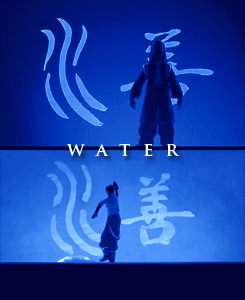

Home
Symbol of the Water Tribe

Left: Water elemental icon. Right: Tribe emblem
-
Location:
The citizens of the water tribe inhabits the northern and southern regions of the globe.
-
Bending technique:

-
Way of life:
Water is the element of change.
The people of the Water Tribe are capable of adapting to many things.
They have a deep sense of community and love that holds them together through anything.